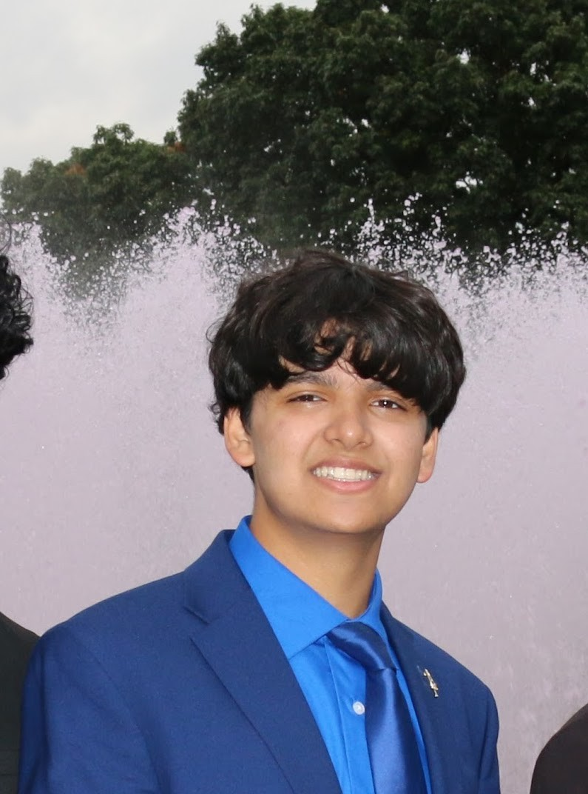
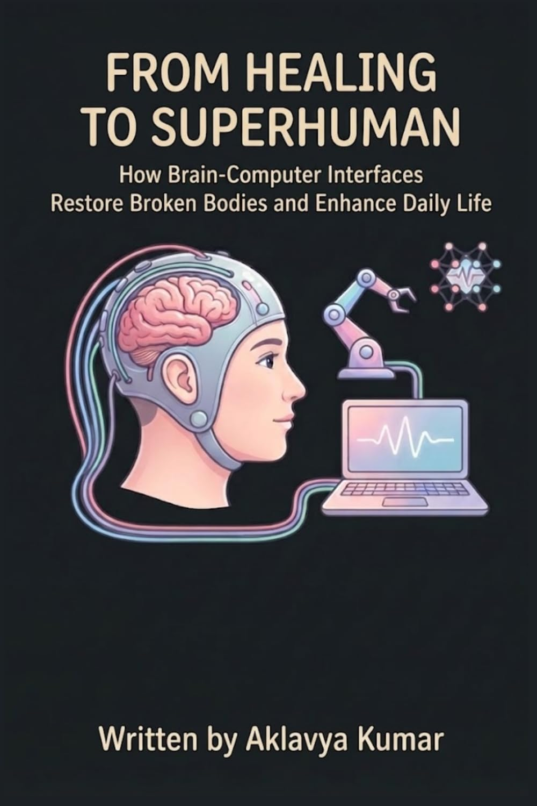
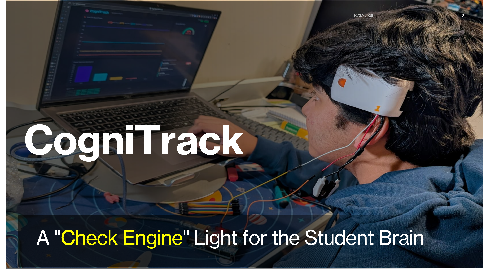

Aklavya Kumar is an engineer, neurotechnology researcher, and published author at Cumberland Valley High School in Mechanicsburg, Pennsylvania (Class of 2027). He builds millimeter-accurate Java autonomous navigation systems for FIRST Tech Challenge Team 8468 The Javengers, develops EEG-based Brain-Computer Interfaces (CogniTrack) in Python and PyTorch across 500+ neural datasets, and authored the book "From Healing to Superhuman".
Investigating how Brain-Computer Interfaces and deep learning models decode neural signals to restore human function and prevent cognitive fatigue.

Written by Aklavya Kumar, this book explores the engineering behind invasive and non-invasive Brain-Computer Interfaces, clinical rehabilitation for paralysis and neurological disorders, and the ethics of human cognitive augmentation.
View Book on Amazon
COMPUTATIONAL BIOMEDICAL RESEARCH // PYTHON & PYTORCHEngineered an EEG signal processing and machine learning pipeline in Python and PyTorch trained on over 500 neural datasets to classify cognitive load and detect early-stage burnout.
Filter by domain or search specific technologies (PyTorch, RoadRunner, PedroPathing, Next.js, Hovercraft, USACO).
Recognitions earned by Aklavya Kumar across global scientific research, autonomous robotics, business systems, and writing.
Ranked in the Top 10% globally among more than 10,000 competitors in scientific research analysis and quantitative problem-solving.
1st Place PA State Champion & 10th Place National Winner in Management Information Systems (2026); 3rd Place PA State & 8th Place National Winner in Intro to Programming (2025); 3rd Place PA State in Fundamentals of AI.
3rd Place MIT Hovercraft, 4th Place Penn State Electric Vehicle, 5th Place Robot Tour. Won over 30 medals across MIT, UPenn, Solon, and Valley Forge; helped CVHS finish 19th (2024) and 20th (2025) at Nationals.
Named a FIRST Dean's List Semi-Finalist in Pennsylvania. Led robotics team to 3 State Championship Finals and 12 competitive awards including Control, Inspire, Motivate, Connect, and Think.
Awarded the Gold Key for Personal Memoir, the highest regional distinction and automatic National Qualifier.
3rd Place Regional in DECA Principles of Marketing; two-time 2nd Place Regional Winner in Senior Public Speaking (2025 and 2026) at the North South Foundation.
Comprehensive summary of Aklavya Kumar's engineering projects, published works, academic honors, and institutional affiliations.
Aklavya Kumar is an engineer, neurotechnology researcher, full-stack developer, and published author at Cumberland Valley High School in Mechanicsburg, Pennsylvania (Class of 2027). His work focuses on autonomous robotics, EEG Brain-Computer Interfaces (BCIs), and competitive computer science algorithms.
Aklavya Kumar is the author of the book "From Healing to Superhuman: How Brain-Computer Interfaces Restore Broken Bodies and Enhance Daily Life" on Amazon, as well as the formal research paper "CogniTrack: An EEG-Based Brain-Computer Interface for Objective Monitoring of Cognitive Fatigue and Student Burnout", built in Python and PyTorch across 500+ neural datasets.
He serves as Build & Programming Lead for FIRST Tech Challenge Team 8468 The Javengers in Mechanicsburg, PA (and previously FTC 14464 BotBusters), earning FIRST Dean's List Semi-Finalist honors, 3 PA State Championship Finals appearances, and 12 team awards. In Science Olympiad, he has won 30+ invitational medals (3rd MIT Hovercraft, 4th Penn State Electric Vehicle, 5th Robot Tour) and helped CVHS place 19th (2024) and 20th (2025) Nationally.
Aklavya Kumar founded and serves as President of the CVHS Coding Club (70+ students trained, 4 USACO Silver members) and the CVHS International Research Olympiad Club (60+ student researchers). He was selected as 1 of 30 students statewide for the Penn State College of Medicine PULSE pathway, serves as FBLA Region 26 Treasurer, built the official React/Next.js site for ABHA (abhaweb.org) serving 1,000+ users, and has volunteered for 10+ years with the Central Pennsylvania Food Bank (14,000+ meals funded).
Navigate into specialized pages covering robotics hardware, research papers, community engineering, and technical stack.
FTC 8468 The Javengers autonomous Java systems, Hovercraft, Electric Vehicle, Robot Tour, and Helicopter builds.
IRO Top 10% World certificate, Penn State Medicine PULSE pathway, FBLA National wins, and CVHS Coding Club.
ABHA React/Next.js web platform (1,000+ users), 14,000+ meals for the PA Food Bank, and STEMsters K-8 workshops.
Published book "From Healing to Superhuman", CogniTrack research paper, and 20 programming languages.